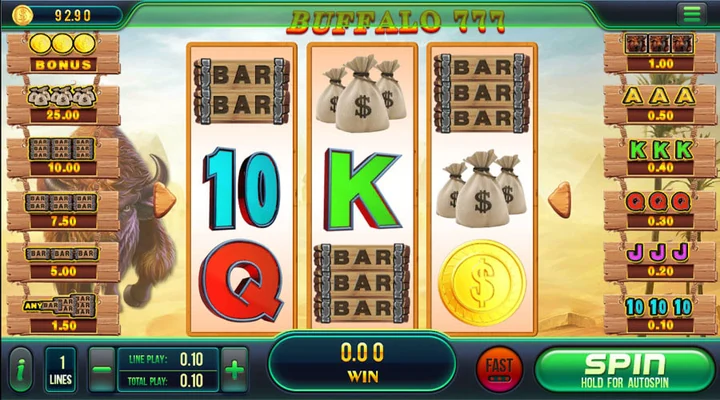
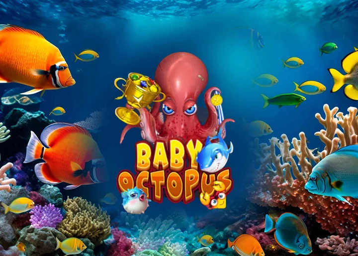

Reel games
A spin starts a round. Symbols settle into columns, and the game compares the result with its paytable. Two games can share a fruit, a seven, or a lion on the cover and still use different symbol combinations. Open the in-game rules to see what counts in that title.
Explore Game Vault’s reel-game artwork




Fish games
The target moves while you decide where to aim. Follow one creature across the table to get a feel for its pace. Deep Sea Predator shows an armored creature on its cover. In Fire Kirin, Baby Octopus uses a coral reef and Arc of Templar brings medieval characters underwater.
Visit the Fire Kirin fish table



Keno
A round begins with a selection of numbers. After the draw, compare the numbers you picked with the numbers drawn. The number of matches is what to look for in the results. Buffalo Keno puts the game type right in its title. Orion Stars lists keno under Table Games.
Find keno on Orion Stars


Remember the picture?
Browse 57 Juwa covers by category or search for part of a title. Select a cover to see the artwork up close.